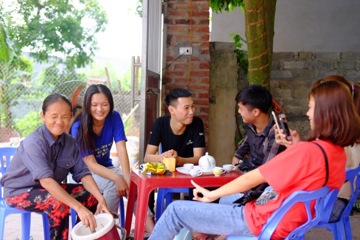
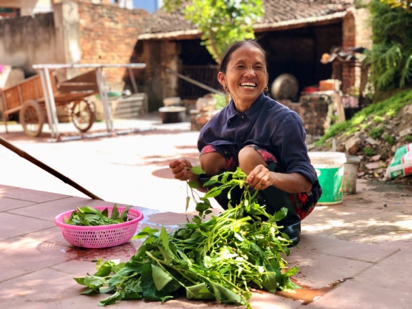
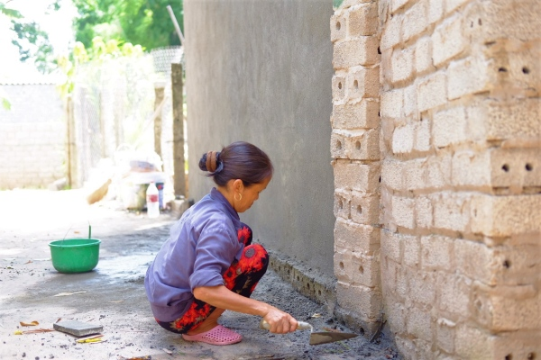

Kiếm tiền bằng cách làm Vlog như bà Tân có nhanh giàu?
Thứ Ba, ngày 23/07/2019 05:00 AM (GMT+7)
Nổi tiếng nhanh chóng trong thời gian ngắn, trở thành hiện tượng, giấc mơ của cộng đồng mạng YouTube Việt Nam, ai cũng nghĩ bà Tân “Vê lốc” kiếm được số tiền "khổng lồ", không phải lao động vất vả như trước đây.
Sự kiện:Bà Tân Vlog
Sau 2 tháng làm Vlog, cộng đồng mạng đồng thổi bà Tân đã xây ngôi nhà 3 tầng khang trang và kiếm được tiền tỷ mỗi ngày. Vì thế, khách từ những tỉnh khác tìm đến nhà bà xin học cách làm giàu rất đông. Không ít người tìm đến nhiều lần, có gia đình ở Vũng Tàu cũng lặn lội tìm tới để mong mẹ con bà hướng dẫn cách làm Vlog, kiếm tiền nhanh chóng.
Theo đó, trung bình mỗi ngày số lượng người tìm đến nhà bà dao động từ 30 đến 40 người với mục đích học kiếm tiền. Vào những ngày nghỉ, con số có thể lên tới 50 - 60 người. Anh Tùng – một thanh niên trong nhóm tình nguyện thường xuyên ở nhà bà Tân tiếp khách hộ, cho biết: "Mỗi ngày bà Tân phải tốn đến 40 lít nước để tiếp khách vì lượng khách đến đây gặp bà rất đông".
Nhóm trẻ tìm đến nhà bà Tân để học cách nổi tiếng.
Không chỉ người ngoài tin rằng bà Tân có thu nhập “khủng”, em gái ruột của bà đang làm nghề phụ hồ cũng đặt vấn đề bỏ việc theo chị gái làm Vlog để nhanh chóng nổi tiếng và giàu có.
Vậy, sự thực bà Tân Vlog kiếm được bao nhiêu tiền sau khi trở thành hiện tượng mạng hot nhất hiện nay?
Trao đổi với PV, anh Nguyễn Văn Hưng - con trai cả của bà Tân, cho biết mặc dù kênh YouTube Bà Tân Vlog đã được bật kiếm tiền chính thức từ ngày 7/6 nhưng đến nay bà vẫn chưa nhận được đồng nào.
Anh cho biết thêm dự kiến ngày 29/7 tới, mẹ anh - bà Tân sẽ nhận được số tiền làm Vlog từ YouTube thông qua một công ty bảo vệ bản quyền ở nước ngoài. Trong đó, bà Tân sẽ bị trừ 20% tổng lợi nhuận với tỷ lệ 10% đóng thuế cho các cơ quan chức năng, 10% công ty giữ lại tiền thù lao bảo vệ bản quyền.
“Hiện tại, mẹ tôi vẫn chưa nhận được đồng nào từ YouTube như nhiều người đồn đoán, có chăng là thu được đôi, ba triệu mỗi lần được mời tham gia sự kiện. Mẹ vẫn phải đi cấy, hái rau, phụ hồ để kiếm thêm thu nhập trang trải cuộc sống”, anh chia sẻ.
Dù đã trở thành hiện tượng mạng và giấc mơ cộng đồng mạng YouTube Việt Nam, bà vẫn lao động hăng say.
Bà Tân cũng khẳng định căn nhà hiện nay gia đình bà đang sinh sống được xây trước khi bà nổi tiếng. “Số tiền xây nhà do vay mượn mà có, hiện số nợ đó gia đình tôi vẫn chưa trả xong. Cuộc sống của tôi và các con vẫn rất khó khăn”, bà Tân tâm sự.
Bà đang tự tay tân trang lại nhà kho cho đẹp để đón tiếp mọi người đến chơi.
Bà Tân cho biết thêm, từ ngày làm YouTube đến nay, cuộc sống của bà không có quá nhiều thay đổi. “Khi trở nên nổi tiếng, tôi được nhiều người biết đến và yêu quý hơn. Tôi rất xúc động. Đó là điều thay đổi lớn nhất từ khi làm YouTube đến nay”, bà nói.
Tuy nhiên, bà cũng tỏ ra lo lắng sự nổi tiếng này không bền lâu. Theo bà, việc kiếm tiền bằng Vlog không như các nghề khác, nó phụ thuộc vào lượt xem, theo dõi. Vì vậy, việc làm mới mình là một áp lực rất lớn để níu chân khán giả.
Bà Tân Vlog tên thật là Nguyễn Thị Tân (58 tuổi), ở thôn Chùa, xã Xuân Hương, huyện Lạng Giang, tỉnh Bắc Giang. Bà là một nông dân có hoàn cảnh khó khăn khi chồng mất vì bệnh hiểm nghèo. Hiện, bà đang sống với hai con trai.
Bà có ngoại hình đặc biệt: cao hơn 1m1, nặng hơn 30 kg. Việc chế biến ra những món ăn khổng lồ như: "cốc trà sữa khổng lồ"; "nồi lẩu siêu cay khổng lồ"; "đĩa cá viên chiên khổng lồ"; "đĩa cơm sườn siêu cay khổng lồ"… đã khiến kênh "Bà Tân Vlog" gây sốt trên mạng xã hội.
Chỉ sau 2 tháng ra mắt, kênh YouTube của bà đã đạt hơn 2 triệu lượt người theo dõi. Điều này đã giúp bà Tân lập kỷ lục Guiness Việt Nam, lọt top 3 kênh YouTube đua sub nhanh nhất Thế giới.
Theo Mai Trang(theo (Dân Việt))